Bus Travel Experience Toolkit Portal
Google GEO API, Living Lab Bus RESTful API
Problem
Background
LLB was focused on open data and public development tools in the context of public bus transportation. Its open development platform offers:
- Fleet of 3 electric buses (heavily supplemented with sensors) operating in Helsinki, Finland on lines 23 and 55
- Set of APIs that allow to fetch sensor data from buses. Blob data API is used for historical data, while RESTful API and MQTT - for real-time data.
- Developer Portal and “Oma kokoelma” (“Own Collection”) that serve as applications hub and API access point
- Bus Travel Experience Toolkit
Bus Travel Experience Toolkit

Created by LLB staff, the Toolkit is a set of bus-themed inspiration and design tools. Its purpose is to inspire and inform developers about bus context and its aspects in order to motivate them to start ideate and develop bus-related applications.
PASSENGER PERSONAS
These personas represent 5 different passenger archetypes with each of their own travel habits, preferences and conduct during the travel.
TRAVEL EXPERIENCE MODEL
This model visualizes general knowdledge of factors that influence travel experience, e.g. importance of the air quality for passengers or social aspects of the standart bus trip.
CONTEXT CARDS
Set of 10 bus related thematic cards for brainstorm sessions. These can be used as topic sources or communication tools similarly to PLEX cards.
PASSENGER JOURNEY MAP
This map breaks down typical bus travel situation into a sequence of actions that passenger usually takes.
Objectives
- Find out what Toolkit's design materials can be considered useful for developers’ ideation process in the context of bus transportation
- Find a suitable format of bus sensor data visualizations that can support and motivate developers to ideate
- Figure out how to combine Toolkit and visualizations and integrate them into Living Lab Bus platform in a format of a web portal
Approach
Obstacles and limitations
- Toolkit was used by some developers in the past during several code jams and junctions, but it didn't appeal to them much due to short project time and lack of proper introduction to it. Thus, there was a need for a proper developer studies for the purpose of exploring what and how developers are percieving and using the Toolkit.
- Lack of backend infrastructure and expertise within the LLB for this project. Therefore, any performance-heavy visualization like real-time charts was not an option.
- Timing for the first phase was not great (June) as many of potential participants were planning or already were on vacation.
Phase 1 - Scenario evaluation
Exploration of Toolkit's attribute space. Discovery of the artifacts related to format and usage of the Toolkit by developers. Sensor data visualization format exploration.
DESCRIPTION
Two different scenarios of Toolkit usage and wireframes for each story. Both scenarios were introduced to 10 software developers from Tampere University. Idea behind scenarios was to explore 2 major cases: a fictional developer that has some vague idea about his future bus related project and other developer that has no context for his future work.
Developers also got a chance to take a look at the current Toolkit materials in physical format to get their opinion on it. After that, they were interview in regard of the stories and Toolkit's properties.
WIREFRAMES
Wireframes were supplemental to scenarios and showed the UI of the future Toolkit portal within the structure of the Developer portal that also has access to APIs. These wireframes were also used as a visual basis, so developers could express their expectation in contrast to presented images. Sensor data visualizations were presented in a form of suggestive flavour text, generated based on accumulated sensor data.
VIEW WIREFRAMES
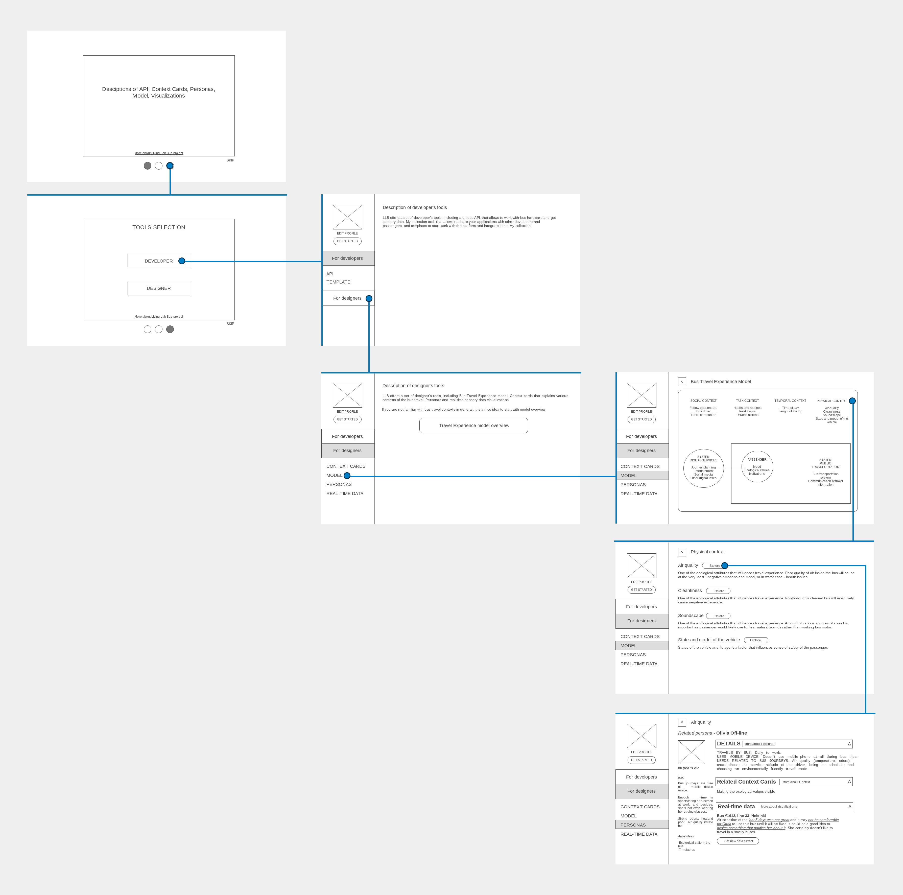VIEW WIREFRAMES
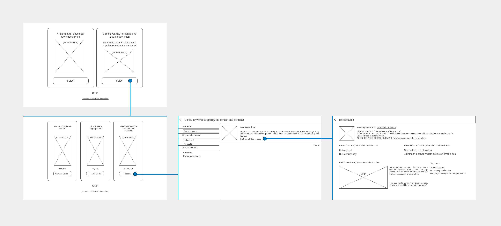Developers were fairly comfortable and satisfied with the Toolkit and presented structure, but they also have raised several points:
- Presence of the LLB API within proposed wireframes set unnecesary expectations from the Toolkit. E.g. developers thought that Toolkit would supplement or advertise the API instead of presenting a value on its own.
- Lack of easily available research data to back the Toolkit also resulted in developers simply underestimating the value of it.
- Terminology, tools titles and format of the Toolkit were confusing for the developers as most of them had no prior experience with them or their types. Personas caused most of the perception issues, while Context Cards and Passenger Journey Map were the most usable for developers.
- Developers expected traditional data visualizations such as maps, parameter values and charts instead of generated text.
Phase 2 - First version of the prototype
- Reachability. Toolkit portal needs to be an entity of its own and be separated from Developer Portal and LLB APIs. It is vital to make sure that developers do not deprioritize the content of the Toolkit in favor of technology.
- Interconnectivity. Toolkit materials need to be interconnected to ensure that developers are aware of the all Toolkit's offerings and to make the look of the Toolkit more consistent and holistic.
- Availability of research data. Portal should provide necessary papers and information to back Toolkit's content.
- Lower entry threshold. Format and terminology of the Toolkit need to be adjusted to match developers' expectations.
SENSOR DATA VISUALIZATIONS
Given the inspirational nature of this work, visualizations were never meant to be a research or a data analysis tool. With aforementioned constraints in mind, datavis took form of a map with locational data of some of the LLB buses and sensor parameters values. Data visualizations also served as an example of what can be done with the LLB API.
ORIGINAL FLOWCHART
This flowchart demonstrates first attempt to look at overall integration of the future Toolkit Portal and its structure.
VIEW FLOWCHART
This flowchart was used as a reference material for the implementation part of the phase and some changes were introduced during the development.
Major addition to the Toolkit was direct links that tie together Personas and relevant Travel Experience Model's contexts and factors for a better holistic view of the Toolkit. Furthermore, Personas and contexts were supplemented with links to relevant sensor data visualizations. This was introduced in order to attract developers to explore bus technical environment and also give additional perspective of some of the Model's contexts. E.g. what sensor parameters may or may not influence air quality or speed of the bus and thus - passenger experience.
Additionally, Glossary with a list of relevant terms and definitions was added to support developer's understanding of Toolkit and to address terminology issues. This feature was inspired by JavaScript frameworks and libraries documentation websites, such as Redux.
Resources page was added as a knowledge bank that contains links to scientific papers published by LLB and related to Toolkit creation.
VIEW FLOWCHART
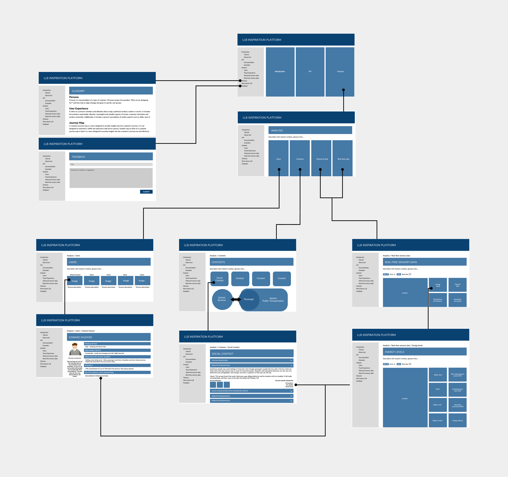Prototype was developed with React.js and CSS Grid. Google GEO API was used for map and visual location tracking of the bus. Living Lab Bus RESTful API allowed to fetch real-time sensor data from the buses.
VIEW INTRODUCTION PAGE
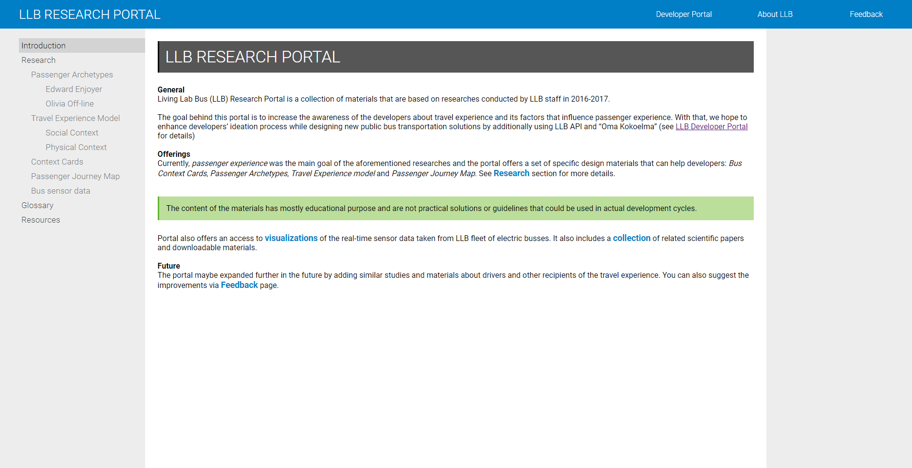VIEW TOOLKIT PAGE
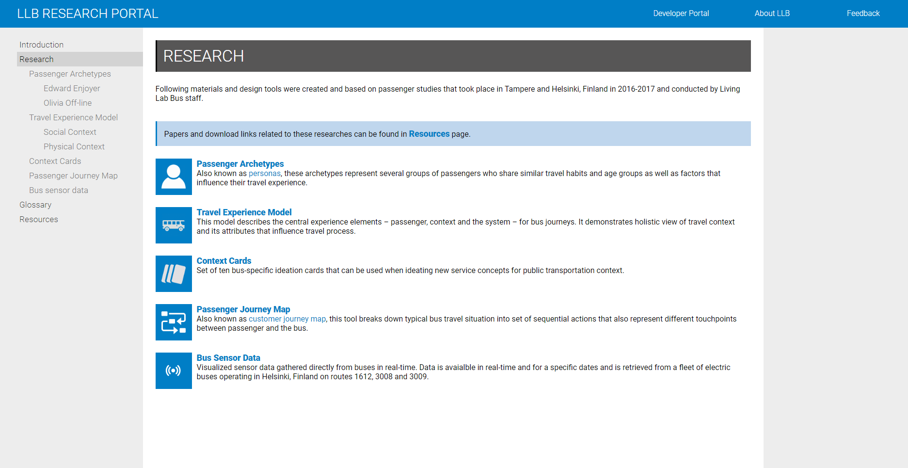VIEW LIST OF PERSONAS
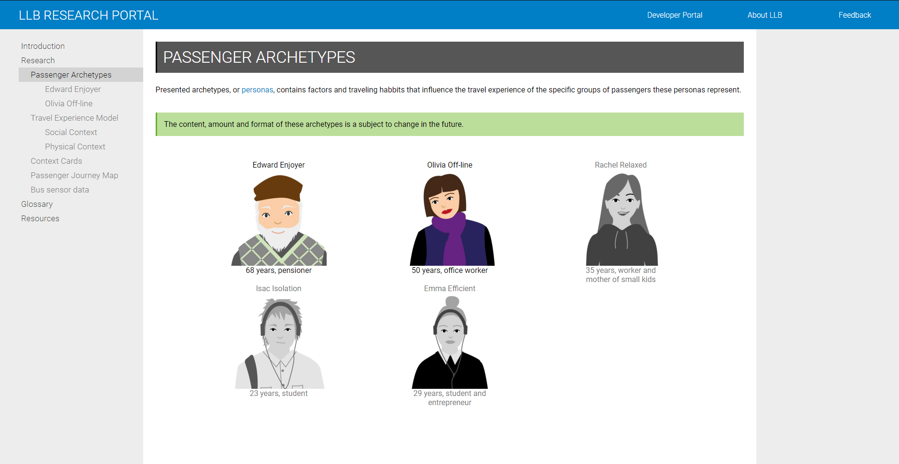VIEW PERSONA PAGE
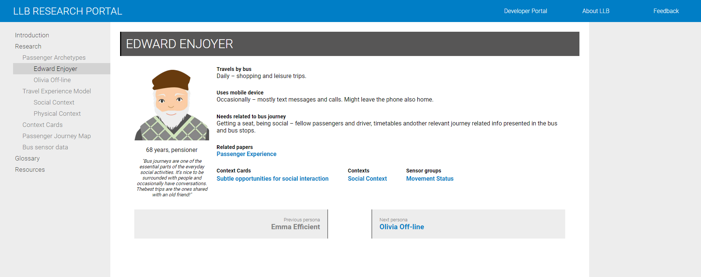VIEW TRAVEL EXPERIENCE MODEL PAGE
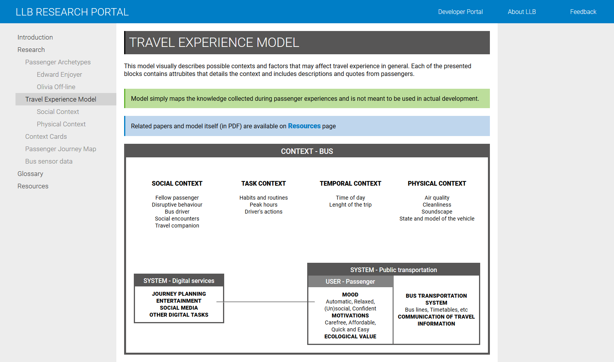VIEW CONTEXT PAGE
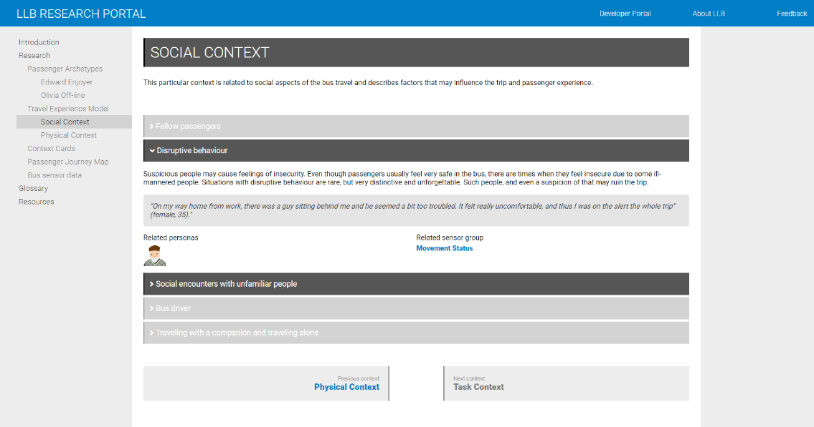VIEW PASSENGER JOURNEY MAP PAGE
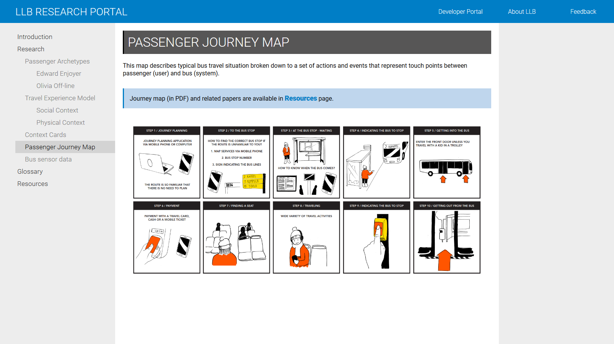VIEW CONTEXT CARDS PAGE
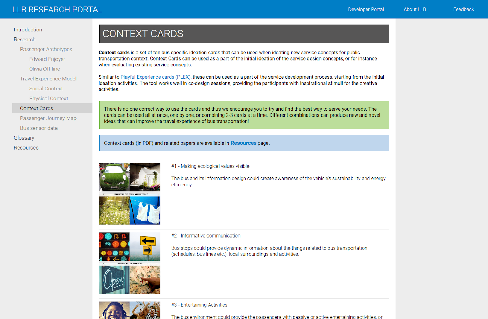VIEW SENSOR DATA VISUALIZATIONS PAGE
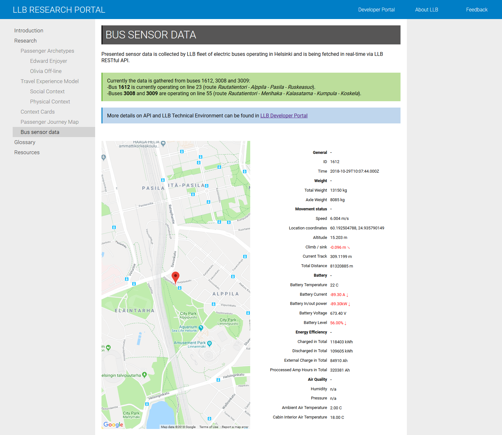VIEW RESOURCES PAGE
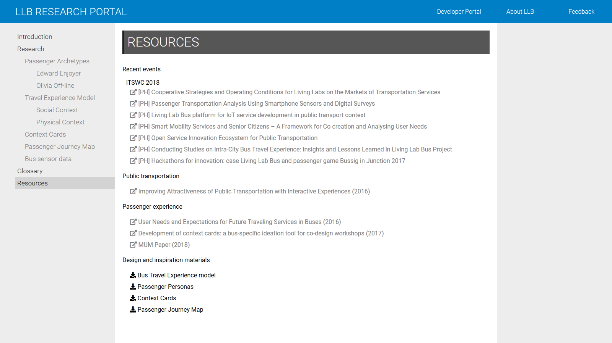VIEW GLOSSARY PAGE
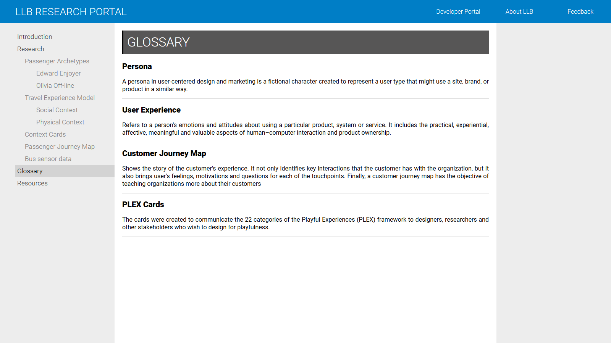Phase 3 - Prototypes tests
The prototype was given to 8 software developers, 4 of which were a part of the previous study. Developers had several tasks that were focused on exploration of the portal and its content as if developers were developing some bus related application.
RESULTS
- General layout of the prototype received mostly positive response, but some developers would like to see more complex graphics.
- Layout of the Travel Experience Model page was the most confusing part of the Toolkit and had very few affordances for developers to operate with.
- Personas were the easiest tool to use and understand, opposite to the previous study. Put personas list page didn't have enough signifiers that listed Personas are interactive.
- Sensor data visualizations could use some filters to hive some parameters and to avoid cognitive overload.
- Terminology was much better, but still there were some slightly rough edges, mostly with the page titles.
- Developer didn't want to have a single page that contained all research materials exclusively and thus, resources should be available on relevant pages
Phase 4 - Final version of the prototype
While general structure was considered feasable and usable, there were some changes introduced to the prototype before sending it to production:
- Prototype got a major visual overhaul, Travel Experience Model received most drastic change as it is no longer replicates paper original.
- Each tool page received its own introduction page and download link that leads to the PDF version of the Toolkit.
- Most of the extra information (connections between tools, related contexts, sensors, ...) were grouped into special highlight box that also contains tooltips explaining those connections. Each Persona also received a broader range or related contexts and sensors and has a direct link to published paper related to its creation.
- Sensor data visualizations page was supplemented with collapsables to reduce visual clutter.
- Introduction page was also changed and now introduces the portal in a more engaging way that just plain text.
RESULT
AVAILABLE ONLINE
Reflection
- This work provided a great opportunity to grow and mature as a UX specialist and gave a solid experience of working on huge and complex design and research project.
- Feasibility was the key element of the work. It was important to deliver actual working website to prove that this kind of framework and toolset can be possible and usable in real-life activities involving software development.
- This work also confirmed a simple fact - there is a still a gap between UX and software development practicies as the industry is still in need for a common langugage between those two. Communication was always a two-way tool and it is vital to continue to make it stronger and more efficient.
- Presented thesis can serve as an example of how design tools can be adjusted for other specialists within other fields outside of bus transportation context.
Feel free to contact me!